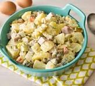

Russian Salad
Home

Russian Salad, also known as Olivier Salad, is a creamy, colorful cold salad made with a mix of boiled vegetables, fruits, and sometimes chicken or eggs, all bound together in a rich mayonnaise-based dressing.
It originated in the mid-19th century in Moscow by Belgian chef Lucien Olivier and became popular across Europe and Asia. The salad is known for its balance of flavors — the savory taste of potatoes, carrots, and peas blends with the sweet juiciness of pineapple or apple, while the creamy dressing adds smoothness.
In Pakistan and India, the Russian Salad is often served at weddings, parties, or as a side dish with barbecue and grilled items. It’s loved for its refreshing, slightly tangy, and mildly sweet taste and its attractive, colorful appearance
Indegredients
- Potatoes – 3 medium (boiled & diced)
- Carrots – 2 medium (boiled & diced)
- Green peas – 1 cup (boiled)
- Boiled eggs – 3 (chopped) (optional for non-veg)
- Apple – 1 medium (peeled & diced) (optional for slight sweetness)
- Cucumber – 1 medium (diced)
- Pineapple chunks – 1 cup (canned or fresh)
- Cooked chicken breast – 1 cup, shredded (optional)
- weet corn – ½ cup (boiled)
- Salt – to taste
- Black pepper – ½ tsp
- For the dressing:
- Mayonnaise – 1 cup
- Fresh cream – ½ cup
- Lemon juice – 1 tbsp
- Sugar – ½ tsp (optional, for balancing taste)
Instruction
- Boil vegetables
- In salted water, boil potatoes, carrots, and peas until tender but not mushy. Let them cool completely.
- Prepare other ingredients
- Dice apple, cucumber, pineapple, and boiled eggs.
- If using chicken, boil or steam it with a little salt and shred.
- Make the dressing
- In a bowl, mix mayonnaise, fresh cream, lemon juice, sugar (optional), salt, and black pepper until smooth.
- Combine the salad
- In a large mixing bowl, gently combine all boiled and fresh ingredients.
- Pour the dressing over and mix carefully so the veggies and fruits remain intact.
- Chill before serving
- Cover the bowl and refrigerate for at least 1 hour before serving. This helps flavors blend.